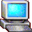
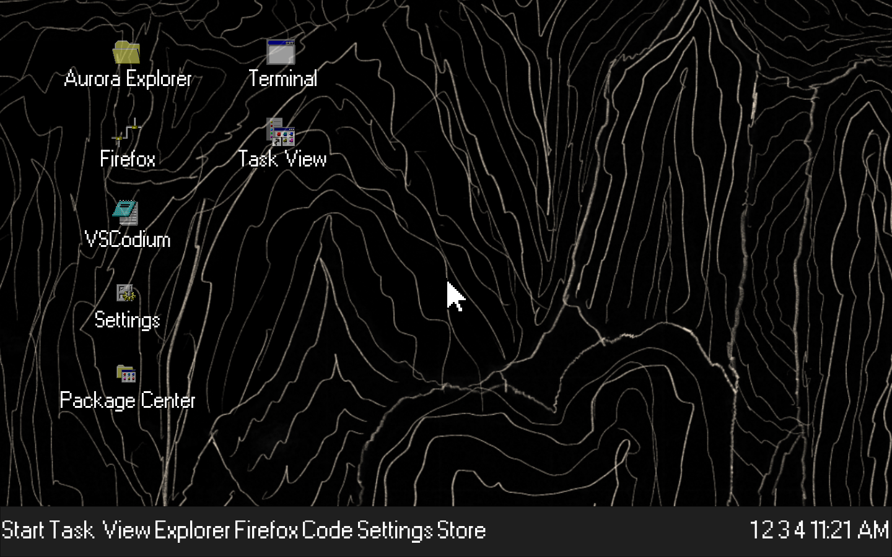
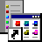
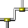

Aurora Explorer
Browse files, downloads, devices, archives, AppImages, packages, and application launchers from one graphical file manager.

AuroraOS 98Linux underneath. Aurora everywhere else.
A fast, keyboard-and-mouse-first operating system for Raspberry Pi and PCs. Classic desktop discipline, current Linux software, and an identity of its own.

01 / EXPERIENCE
Every visible control has a job. Windows are square, state is obvious, spacing is compact, and familiar Linux applications run as themselves.
Desktop · Start menu, taskbar, four workspaces, original icons
Browse files, downloads, devices, archives, AppImages, packages, and application launchers from one graphical file manager.
System, networking, sound, appearance, applications, and workspaces live in a single native settings application.
Native packages, Flatpak, AppImage, and optional installers are coordinated without inventing another package ecosystem.

Four workspaces, task switching, desktop icons, context menus, keyboard shortcuts, and a proper system tray.
02 / PLATFORM
Aurora owns the desktop surface while mature Linux components keep hardware and applications compatible.
Run established Linux applications instead of rebuilding mature tools for appearance alone.
Keep the boot path short, background work deliberate, and desktop behavior responsive on modest hardware.
Separate shell, compositor, settings, packages, and privileged hardware services behind clear boundaries.
Prefer explicit controls, readable hierarchy, and predictable interaction over hidden gestures and decorative motion.
03 / RASPBERRY PI
Raspberry Pi 4 and 5 are product targets, not afterthoughts. Aurora surfaces the hardware developers actually use while keeping privileged access outside the desktop process.

I²C Bus/dev/i2c-1ONLINEaurora-pi-hardwared · connected
04 / PROJECT STATUS
The complete interaction loop runs in QEMU today. The persistent production image and custom Wayland session remain active engineering work.
05 / DOWNLOADS
Download the current source, build the runnable QEMU preview, or flash the experimental Raspberry Pi 4/5 hardware-test image.
Complete main branch as a ZIP file
ARM64 for Apple Silicon and x86-64 hosts
Experimental RAM desktop · 4 GB+ Pi required
This build combines the Aurora ARM64 desktop with Alpine's Raspberry Pi kernel, firmware, Broadcom Wi-Fi firmware, and matching modules. It is non-persistent and has passed archive, boot-partition, and initramfs validation, but still needs physical Pi 4/5 boot testing.
Read the test instructions and checksum →06 / TRY IT
The fastest current route is the hardware-accelerated ARM64 QEMU image on Apple Silicon. Build products stay local and are not committed to Git.
$ brew install qemu lz4 libarchive
$ make firefox-qemu-arm64
$ make run-fast-qemu